The Arborec
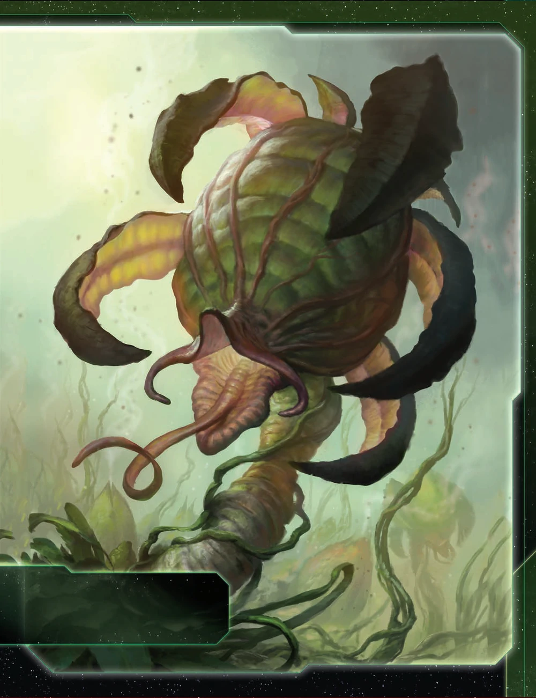
R1 Strategy
Trade > Leadership > Politics
R2+ Strategy
Leadership > Trade > Imperial
Tech Path (Blue)
Sarween → DET/Antimass → Grav Drive → Carrier II → Fleet Logistics
Slice
Want: Fracture, blue skip, MR path
Avoid: Asteroids, empty tiles
Game Plan
Early (R1): Secure Psychospore breakthrough (mandatory) - this is your #1 priority. Use Agent to upgrade cruiser → carrier for 3-system expansion. Plant infantry on every planet - each one is a mobile production facility. Tech only if resources allow after breakthrough. You need 4-5 strategy pool tokens by R3-4 to really pop off.
Mid (R2-R3): Let others take Custodians R2 - grabbing it hurts your economy and makes you a target while weak. Unlock Commander at 12 ground forces for deterrent effect. Use Mitosis → Mech via DEPLOY for free mechs (2 res value) every status phase. Accept slow scoring R1-R2; your curve is R3-R5 where you score 2-3 points per round.
Late (R4+): Take MR with overwhelming force (8-12+ GF) - only when you can hold it. When you take it from another player via Imperial, you get 2 points (1 for MR + 1 for taking). Save Hero for massive swing turn before final push - produce anywhere you have infantry. Commander makes opponents hesitant to activate your systems.
Key Units
Infantry - PRODUCTION 1
Mechs - Free via Mitosis
Fleet: Carrier + Dread/Flag
Exploit
Psychospore: Reclaim CC + inf
Mitosis → Mech DEPLOY
Magen: +2 inf on activate
Argent Flight
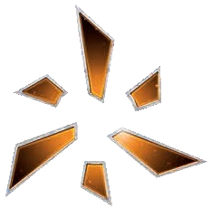

R1 Strategy
Trade > Leadership > Tech
R2+ Strategy
Trade > Leadership > Tech
Tech Path (Red/Yellow)
Magen → Aerie Hololattice → Strike Wing II → Grav Drive → PDS II
Slice
Want: High value, influence, R/B skips
Avoid: Very flexible - works anywhere
Game Plan
Early (R1): Incredible expansion - 2 destroyers each have capacity 1, can take systems 2-moves away independently. Aim for 3-4 systems R1. Start with Sarween + Plasma Scoring techs. Get Magen Defense Grid for free infantry when activated.
Mid (R2-R3): Unlock Commander at 6 units with AFB/SPACE CANNON/BOMBARDMENT (easy with destroyers + PDS). Get Strike Wing Alpha II for devastating AFB 6 (x3). MR is "get in, get out" - grab Custodians, don't feel obligated to hold forever.
Late (R4+): Hero for massive fleet repositioning - surprise attacks or defensive regrouping. Transition to carriers for late game capacity. Aerie Hololattice blocks enemy movement through your structure systems.
Key Units
Destroyers - AFB spam
PDS - Area denial
Mechs - Free capacity
Exploit
Raid Formation: Excess AFB → dmg capitals
Zeal: 1 vote = 1 + player count
Aerie: Blocks movement, PROD 1
Barony of Letnev

R1 Strategy
Trade > Leadership > Politics
R2+ Strategy
Leadership > Trade > Tech
Tech Path (Blue/Red)
Grav Drive → Destroyer II → Non-Euclidean → Duranium Armor
Slice
Want: MR/Fracture access, influence
Avoid: No path to objectives
Game Plan
Early (R1): GET GRAVLEASH BREAKTHROUGH - mandatory, top priority. It lets your whole fleet move at destroyer speed. Expand 2-3 systems. Your HS has 6 resources but only 1 influence - need influence planets.
Mid (R2-R3): Unlock Commander at 5 non-fighter ships (easy). Commander = Sustain Damage gives you 1 TG, fueling Munitions Reserves. Build dreadnought armada using Armada ability (+2 non-fighter ships per system).
Late (R4+): Control MR with 5-dread fleet. Non-Euclidean Shielding (cancel 2 hits on Sustain) + Duranium Armor (repair 1 unit/round) = nearly unkillable. Hero removes fleet limits for one round - build mega fleet.
Key Units
Dreads - Capital fleet
Flagship - Auto-repair
Destroyer - Speed setter
Exploit
Armada: +2 ships per system
Munitions: 2 TG = reroll all
Gravleash: Fleet moves together
Clan of Saar

R1 Strategy
Tech > Trade > Construction
R2+ Strategy
Trade > Imperial > Construction
Tech Path (Blue)
Grav Drive → Chaos Mapping → Carrier II → Light/Wave
Slice
Want: Asteroid belt (critical!), high res
Avoid: Supernova/rift blocking MR
Game Plan
Early (R1): Grab entire slice and more - Scavenge gives 1 TG per planet conquered. Build additional Floating Factories (need 3 for commander). You have worst home system but don't need it - Nomadic lets you score without home control.
Mid (R2-R3): Take MR and hold it. Commander unlocks with 3 factories - produce infantry anywhere, place at any dock. Chaos Mapping = produce 1 unit BEFORE moving each turn + opponents can't activate asteroids with your ships.
Late (R4+): Use Hero to destroy all enemy infantry/fighters adjacent to your dock. Nomadic = focus on objectives, abandon home if needed. Light/Wave for repositioning. Floating Factories in asteroids = safe production fortresses.
Key Units
Factories - Mobile docks
Flagship - AFB 6 (x4)
Mechs - Deploy on conquer
Exploit
Scavenge: 1 TG per planet
Nomadic: Score without home
Chaos: Asteroid sanctuary
Council Keleres
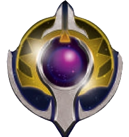

R1 Strategy
Construction > Trade > Tech
R2+ Strategy
Politics > Trade > Leadership
Tech Path (Yellow)
Sarween (start) → Grav Drive (start) → Executive Order → Agency Supply Net
Slice
Want: MR access (critical!), fwd dock spot
Avoid: Isolated slices, no MR path
Game Plan
Early (R1): Solve expansion problem (only 2 infantry). Pick Mentak home (best choice - 4 res, single planet). Get breakthrough R1 with 3 TG using agent. Construction primary gives bonus dock. Expand carefully.
Mid (R2-R3): Get Executive Order R2 - force opponents to exhaust influence on agendas. Get Agency Supply Network R3 - produce in 2 systems per action. Sarween gives -1 in BOTH systems. Build docks for production scaling.
Late (R4+): Take MR R3+ with Custodia Vigilia (PRODUCTION 3, SPACE CANNON 5). With ASN + 3 docks + MR = 8 productions per round. Outproduce everyone. Use hero for massive action card plays.
Key Units
Carriers - Transport
Dreads - Combat power
Mechs - Influence tax defense
Exploit
Council Patronage: 3 TG/round
ASN: Double production
Exec Order: Agenda control
Embers of Muaat

R1 Strategy
Trade > Tech > Leadership
R2+ Strategy
Trade > Leadership > Imperial
Tech Path (Red)
AI Dev Algo → Self-Assembly → War Sun II
Slice
Want: High influence, central, 1 neighbor
Avoid: Isolation, resource-starved
Game Plan
Early (R1): Get Stellar Genesis breakthrough (Avernus planet with R↔Y synergy). Use Umbat agent to produce carrier at home. Split 4 infantry across war sun + carrier for 2-system expansion. War sun has move 1 - position carefully.
Mid (R2-R3): Rush Prototype War Sun II for move 3 (CRITICAL upgrade). Build 2nd war sun to unlock Magmus commander (1 TG per strategy token spent). Star Forge spam - spend strategy tokens for free fighters/destroyers.
Late (R4+): Control MR with war sun. Use Star Forge constantly to screen with fighters. Hero = Nova Seed destroys entire systems, converting them to supernovas. Avernus with dock = mobile production that follows war sun.
Key Units
War Sun - Everything
Fighters - Screen
Destroyers - Star Forge
Exploit
Star Forge: Mobile prod
Magmus: TG per token
Nova Seed: System delete
The Empyrean

R1 Strategy
Trade > Tech > Leadership
R2+ Strategy
Imperial > Leadership > Trade
Tech Path (Blue)
DET (start) → Grav Drive → Aetherstream → Carrier II
Slice
Want: Empty systems, wormholes
Avoid: Asteroids/supernova blocking
Game Plan
Early (R1): Send destroyers to explore empty systems with Dark Energy Tap. Agent refunds tokens - explore 2-3 empty systems per round. Trade Dark Pact to key neighbor. Expand with 2 carriers. Nebula home = strong defense.
Mid (R2-R3): Get Aetherstream - game-changing +1 move near anomalies. Sell this ability. Void Tether breakthrough blocks key routes. Build more destroyers for exploration. Carrier + fighter fleet for defense.
Late (R4+): Hero floods board with frontier tokens - explore ALL at once for massive spike. Commander reclaims tokens when opponents activate near you. Watcher mechs cancel action cards on demand. Win through exploration, not combat.
Key Units
Destroyers - Explore
Carriers - Defense
Mechs - Cancel cards
Exploit
Dark Pact: +1 TG trades
Aetherpassage: Sell move
Void Tether: Block routes
Federation of Sol

R1 Strategy
Trade > Tech > Leadership
R2+ Strategy
Imperial > Leadership > Trade
Tech Path (Blue)
Grav Drive → Sling Relay → Carrier II → Bio-Stims/Fleet Log
Slice
Want: Slight res bias, MR access
Avoid: Almost nothing - handles all
Game Plan
Early (R1): Get Bellum Gloriosum breakthrough - produce infantry/fighters up to carrier capacity FREE. Expand with 2 carriers + 5 infantry. Versatile gives +1 CC per round. Spec Ops hit on 7. Build more carriers.
Mid (R2-R3): Get Advanced Carrier II (Sustain Damage + 8 capacity). Sling Relay repositions carriers. Commander gives free infantry when defending. Target Fracture, MR, or weak neighbor. Orbital Drop reinforces instantly.
Late (R4+): Genesis flagship (12 capacity, free infantry/round). Hero clears all command tokens for massive multi-front assault. Overwhelm through numbers - carriers with Sustain are nearly unkillable. You win by showing up.
Key Units
Carriers - Sustain + 8 cap
Infantry - Combat 7
Genesis - 12 cap flagship
Exploit
Versatile: +1 CC/round
Bellum: Free army prod
Orbital Drop: Instant inf
Ghosts of Creuss

R1 Strategy
Trade > Leadership > Politics
R2+ Strategy
Leadership > Tech > Imperial
Tech Path (Blue)
Grav Drive (start) → Sling Relay → Wormhole Gen → Fleet Logistics
Slice
Want: Wormholes, influence bias
Avoid: Slices without wormholes
Game Plan
Early (R1): Unlock Particle Synthesis breakthrough - wormholes get PRODUCTION. Get Sling Relay. Use agent to reach Mallice from home for bonus TGs. Slipstream = +1 move from wormholes. Build carriers. Home is delta wormhole.
Mid (R2-R3): Commander unlocks at 3 wormhole systems - free fighters when moving through wormholes. Wormhole Generator places wormholes anywhere. Breakthrough makes wormholes production hubs. Nexus = PROD 3 with 3 wormholes.
Late (R4+): Hero SWAPS any 2 systems with wormholes/your units. Swap MR adjacent to your slice. The entire map is one jump away. Score objectives others can't reach. Distance is an illusion.
Key Units
Carriers - Commander fighters
Dreads - Combat backbone
Flagship - Mobile delta WH
Exploit
Quantum: All WHs adjacent
Slipstream: +1 from WHs
Hero: Swap 2 systems
L1Z1X Mindnet
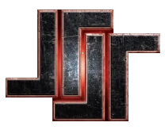

R1 Strategy
Trade > Leadership > Tech
R2+ Strategy
Tech > Trade > Leadership
Tech Path (Blue)
DET/Antimass → Grav Drive → AI Dev Algo → Super Dread II
Slice
Want: Influence (critical!), targets
Avoid: Resource-heavy (0 home inf)
Game Plan
Early (R1): Get Fealty Uplink breakthrough - free infantry = planet's influence when conquering. 5 res home, 0 influence - NEED influence planets. Build dreads immediately. Assimilate steals enemy structures on conquest.
Mid (R2-R3): Unlock Commander at 4 dreads - ignore Planetary Shield for BOMBARDMENT. Rush Super Dread II for move 2 + Direct Hit immunity. Harrow = BOMBARDMENT after EVERY ground combat round. Obliterate defenders.
Late (R4+): Hero teleports flagship + all dreads anywhere without enemy ships. Surprise MR takes. 5-dread fleet with flagship forces hits on non-fighters. Take what you want - once you take something, it was always yours.
Key Units
Dreads - Everything
Flagship - Bypass fighters
Mechs - Orbital BOMBARD
Exploit
Harrow: Repeated BOMBARD
Assimilate: Steal structures
Fealty: Free inf on conquer
Mentak Coalition
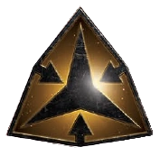

R1 Strategy
Construction > Tech > Trade
R2+ Strategy
Leadership > Tech > Imperial
Tech Path (Yellow)
Neural Motivator → Cruiser II → Salvage Ops → Mirror Computing
Slice
Want: Rich neighbors, wormholes
Avoid: Isolation, low influence
Game Plan
Early (R1): Position near rich neighbors (Hacan, Jol-Nar, Empyrean). Pillage triggers when neighbor has 3+ TG - steal 1. Only 1 carrier limits expansion. Agent softens Pillage (both draw action card). Build cruisers.
Mid (R2-R3): Cruiser II = Ambush hits on 6+, move 3. Salvage Ops = 1 TG every combat + free ship on win. Commander at 4 cruisers - force PN extraction after combat wins. Corsair breakthrough = move through enemies.
Late (R4+): Mirror Computing doubles TG value (1 TG = 2 res). You're rich from Pillage. Hero replicates destroyed enemy ships mid-combat. Flagship + Mechs deny Sustain Damage. AAARRRRR!
Key Units
Cruisers - Move 3, Ambush
Flagship - No enemy Sustain
Mechs - Ground Sustain deny
Exploit
Pillage: Steal from 3+ TG
Ambush: Pre-combat hits
Mirror: 2x TG value
Mahact Gene-Sorcerers
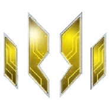

R1 Strategy
Trade > Tech > Leadership
R2+ Strategy
Leadership > Imperial > Trade
Tech Path (Blue)
DET → Transit Diodes → Grav Drive → Sling Relay
Slice
Want: Resources, blue skip, variety
Avoid: Low res (only 3 at home)
Game Plan
Early (R1): Expand to solve 3-res economy. Agent saves tokens on secondaries - make deals. Fight small skirmishes to collect tokens via Edict (1 per opponent). Bio-Stims helps unlock breakthrough on tech planets.
Mid (R2-R3): Commander unlocks at 2 stolen tokens - use Imperia to wield enemy commander abilities. Stack multiple abilities for broken combos. Vaults of the Heir purges techs for relics. Hero forces mandatory fleet battles.
Late (R4+): Endless tokens let you march across galaxy turn after turn. Starlancer mechs terminate opponent activations. Use Leadership to outlast everyone. Flagship +2 combat vs non-stolen tokens. You become inevitable.
Key Units
Legionnaires - 1 res = 2 units
Flagship - +2 vs non-tokens
Mechs - End opponent turns
Exploit
Edict: Steal tokens on win
Imperia: Use enemy cmders
Vaults: Purge tech → relic
Naalu Collective
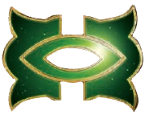

R1 Strategy
Trade > Tech > Leadership
R2+ Strategy
Trade > Tech > Imperial
Tech Path (Blue)
Fighter II → Grav Drive → Carrier II → Fleet Logistics
Slice
Want: Safe slice, MR access
Avoid: Gravity rift/nova blocking MR
Game Plan
Early (R1): Initiative-0 = always act first. Agent lifts CC from systems for extra movement. Score first with Telepathic. Hybrid Crystal Fighters hit on 8. Foresight retreats before combat (costs 1 CC). Build fighter swarms.
Mid (R2-R3): Fighter II = move 2 independently, combat 7, 0.5 fleet cost. Commander sees neighbor PNs + top/bottom agenda. Mindsieve breakthrough = pay PNs for free secondaries. Stay under radar while building strength.
Late (R4+): Hero steals 1 PN from every player. Flagship lets fighters fight in ground combat (then return to space). Fleet Logistics + Imperial = massive scoring swing. Score first every round to close out win.
Key Units
Fighters - Combat 7, move 2
Flagship - Fighters fight ground
Mechs - Free on relic gain
Exploit
Telepathic: Always act first
Foresight: Retreat pre-combat
Mindsieve: PN = free 2ndary
Naaz-Rokha Alliance
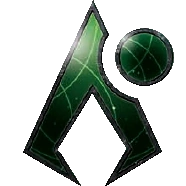

R1 Strategy
Tech > Trade > Leadership
R2+ Strategy
Imperial > Leadership > Tech
Tech Path (Green/Blue)
Bio-Stims → Hyper Meta → Grav Drive → Carrier II
Slice
Want: 1 of each planet type, high count
Avoid: Low planet count slices
Game Plan
Early (R1): Distant Suns = draw 2 exploration cards, pick best. Always place mech before exploring. Agent explores again. Fabrication converts 2 fragments → relic OR 1 fragment → CC. Self-sufficient exploration engine.
Mid (R2-R3): Commander unlocks at 3 mechs in 3 systems - explore conquered planets. Mechs are Combat 6 (x2) with Sustain on ground, Combat 8 (x2) in space. Quality over quantity - win critical battles.
Late (R4+): Hero = free relic + 2 free secondaries. Flagship gives mechs +1 die each. 3 mechs + flagship = 11 combat dice. Your upgraded planets + relics + powerful mechs close out the game through quality.
Key Units
Mechs - 6(x2) ground/8(x2) space
Flagship - +1 die per mech
Carriers - Mech transport
Exploit
Distant Suns: Pick best of 2
Fabrication: Frags → relics
Pre-Fab: Ready on explore
Nekro Virus

R1 Strategy
Trade > Leadership > Construct
R2+ Strategy
Leadership > Warfare > Imperial
Tech Path (Steal)
STEAL: Grav Drive → Carrier II → Dread II → Fleet Logistics → Any unit upgrades
Slice
Want: Resources, access to neighbors
Avoid: Anomalies blocking paths
Game Plan
Early (R1): Cannot research - Propagation gives 3 CCs instead. Tech Singularity steals 1 tech per combat when you destroy a unit. Only 2 infantry limits expansion. Agent converts action cards/CCs to TGs. Fight early for Gravity Drive.
Mid (R2-R3): Commander unlocks at 3 techs - draw action card every tech steal. Valefar Assimilators copy faction techs. Spread combat evenly across table for varied techs. Build flagship + infantry swarm.
Late (R4+): You'll have 2x everyone's tech count. Alastor flagship = infantry fight in space combat. Mechs get +2 combat vs Assimilator targets. Hero destroys units on tech planet + steals tech. The virus consumes all.
Key Units
Infantry - Fight in space via flag
Flagship - Infantry as ships
Mechs - +2 vs Assimilated
Exploit
Singularity: Steal tech/combat
Propagation: 3 CCs vs tech
Galactic Threat: Agenda tech
The Nomad
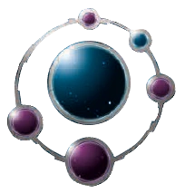

R1 Strategy
Trade > Tech > Leadership
R2+ Strategy
Imperial > Leadership > Trade
Tech Path (Blue)
Scanlink (start) → Grav Drive → Carrier II → Fleet Logistics
Slice
Want: Influence, MR access
Avoid: Resource-heavy (flagship = prod)
Game Plan
Early (R1): Memoria flagship = PRODUCTION 3, move 1. Flagship IS your home production. Agent swaps flagship position with another ship. Memory agents (Artuno, Aida, Thundarian) provide unique abilities. Unlock The People's Will breakthrough for legendary PRODUCTION 7 dock.
Mid (R2-R3): Commander at scored objective + Memoria on board = produce flagship free (saves 8 res!). Stack agents for versatile combos. Thundarian = AFB 5 on flagship. Trade your powerful promissory notes for value.
Late (R4+): Hero gives agenda card that scores 1 VP when resolved (rider wins). Flagship with 12 capacity (upgraded) holds entire fleet. You're the most diplomatic faction - everyone wants your trades. Close via political manipulation.
Key Units
Flagship - Your home base
Carriers - Backup transport
Mechs - 1 res each
Exploit
Memoria: Mobile PROD 3+
Agents: Stack abilities
Commander: Free flagship
Sardakk N'orr
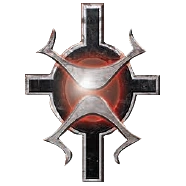

R1 Strategy
Tech > Trade > Leadership
R2+ Strategy
Leadership > Imperial > Trade
Tech Path (Red)
Antimass/Grav → Valkyrie → Carrier II → Assault Cannon
Slice
Want: High res, central, tech skip
Avoid: Long paths to targets
Game Plan
Early (R1): Unrelenting = +1 combat on ALL units. Start with no tech but breakthrough gives R↔G synergy. Exotrireme II dreads = cost 3, +1 die vs non-fighters. Agent exhausts planets you control. Expand carefully - need tech skip badly.
Mid (R2-R3): Get Valkyrie Particle Weave (R) - +2 infantry ground combat during BOMBARDMENT round. Commander unlocks at 3 space combats won - enemy Ground Forces get -1 combat. Mechs grant BOMBARDMENT 5 to ships.
Late (R4+): Hero permanently upgrades Exotriremes for the game. With +1 faction ability, your units massively outfight everything. Assault Cannon destroys 1 enemy ship before combat. Stomp toward victory with overwhelming force.
Key Units
Exo Dreads - Cost 3, +1 die
Infantry - Ground dominance
Mechs - Grant BOMBARD
Exploit
Unrelenting: +1 ALL combat
Exotrireme: Cheap dreads
Valkyrie: +2 inf in BOMBARD
Titans of Ul

R1 Strategy
Trade > Leadership > Tech
R2+ Strategy
Leadership > Imperial > Trade
Tech Path (Blue/Yellow)
Grav Drive → Saturn Engine II → PDS II → Carrier II
Slice
Want: Elysium, high resources
Avoid: Empty tiles, influence-heavy
Game Plan
Early (R1): Start with Scanlink. Terragenesis places sleeper tokens when gaining planet control. Awaken upgrades PDS → Hel-Titans (Space Cannon 5 to ANY adjacent system). Saturn Engine cruisers = move 2, capacity 2, Sustain. Unlock breakthrough for structure abilities.
Mid (R2-R3): Commander unlocks at 5 structures - gain 1 TG every PRODUCTION. Hel-Titan PDS network covers multiple systems. Saturn Engine II = move 3, capacity 2, Sustain. Mechs DEPLOY from structures for surprise reinforcements.
Late (R4+): Hero purges sleeper to place PDS II on any planet you control. Ouranos flagship gives units +1 die during SPACE CANNON. Your PDS web denies entire map sections. Structure-based control wins through area denial.
Key Units
Saturn II - Cruiser god-mode
Hel-Titan - Adjacent cannon
Mechs - Deploy from struct
Exploit
Sleepers: Free upgrades
Commander: TG on prod
Hel-Titan: Area denial
Universities of Jol-Nar

R1 Strategy
Trade > Politics > Leadership
R2+ Strategy
Trade > Politics > Imperial
Tech Path (All Colors)
Bio-Stims → Hyper Meta → E-Res → Carrier II
Slice
Want: Influence, safe position
Avoid: Adjacent aggressors
Game Plan
Early (R1): Start with 4 TECHS (Antimass, Neural, Sarween, Plasma). Analytical skips 1 prereq per tech. Brilliant = on Tech secondary, can research same as primary user. FRAGILE = -1 to ALL combat rolls. Stay out of fights!
Mid (R2-R3): E-Res Siphons = 2 TG when opponent uses PRODUCTION in your system. Build PDS network - Commander rerolls unit ability dice. Space Academy breakthrough = free Dread II + 2 tech when scoring 3 objectives.
Late (R4+): Tech count = 12-15 by game end. Hero lets you choose which agendas resolve. Outtech everyone despite -1 combat. Compensate with unit upgrades and overwhelming numbers. Win through superior technology.
Key Units
PDS II - Reroll cannons
Carriers - Stay safe
Mechs - Infantry repair
Exploit
Brilliant: Copy tech pick
E-Res: TG from neighbors
Analytical: Skip prereqs
Vuil'raith Cabal
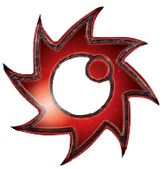

R1 Strategy
Construction > Trade > Leadership
R2+ Strategy
Leadership > Imperial > Trade
Tech Path (Riftmeld)
SAR (start) → RIFTMELD: Carrier II → Dread II → Destroyer II
Slice
Want: Gravity rifts, high influence
Avoid: Resource-heavy (units are free)
Game Plan
Early (R1): Devour CAPTURES enemy units destroyed in combat. Amalgamation = return captured unit to produce that type FREE. Fight early to build capture reserves. Dimensional Tear docks create gravity rifts. Commander unlocks at 3 gravity rifts.
Mid (R2-R3): Riftmeld uses captured units to SKIP tech prerequisites. Get Carrier II, Dread II, Destroyer II all via Riftmeld. Commander = 2 fighters/infantry don't count against PRODUCTION. Your captured unit economy funds endless fleets.
Late (R4+): Flagship captures ALL destroyed units (including yours) in system. Hero rolls to capture ships near your docks. You never pay for units again. The more combat, the richer you become. Devour everything.
Key Units
Flagship - Capture all
Dreads - Free via capture
Fighters/Inf - Spam free
Exploit
Devour: Capture enemies
Amalgamate: Free prod
Riftmeld: Skip tech prereq
The Winnu
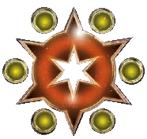

R1 Strategy
Trade > Tech > Politics
R2+ Strategy
Imperial > Politics > Trade
Tech Path (Any)
Choose start tech via ability → Grav Drive → Carrier II → Flex based on objectives
Slice
Want: MR access (CRITICAL!), safe
Avoid: Blocked MR path, aggro neighbors
Game Plan
Early (R1): Blood Ties = don't pay for Custodians token. Reclamation = gain free dock + PDS on Mecatol Rex. Choose starting tech based on slice. Agent gives action card when you/neighbor activates MR. Everything revolves around MR.
Mid (R2-R3): Rush MR Round 2 - you're the only faction that gets free structures there. Commander = +2 combat on MR, home system, legendary planets. Flagship adds influence equal to MR planets you control. Lazax breakthrough = extra MR control bonus.
Late (R4+): Hero makes votes count 0 for one agenda - force your preferred outcome. MR control + Commander = combat god on the throne. Salai Sai Corian gives you tech when others research. Hold MR, control politics, win.
Key Units
Flagship - MR influence
Infantry - Hold MR
Mechs - Sustain on MR
Exploit
Blood Ties: Free custodian
Reclamation: Free MR struct
Commander: +2 combat MR
Xxcha Kingdom
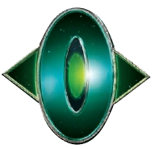

R1 Strategy
Trade > Tech > Diplomacy
R2+ Strategy
Politics > Imperial > Trade
Tech Path (Yellow)
Grav Laser (start) → Nullification Field → PDS II → Carrier II
Slice
Want: Influence, defensive position
Avoid: Aggressive neighbors
Game Plan
Early (R1): Peace Accords = spend influence to ready planets after gaining control. Quash = spend 1 token to veto agenda. Agent readies PDS after cannon use. Graviton Laser System (start) = cannons target non-fighters. Build PDS network.
Mid (R2-R3): Commander unlocks at 6 influence spent on abilities - +1 vote per planet. Nullification Field cancels action cards by spending 2 tokens. Mechs fire SPACE CANNON 8 into adjacent systems! Your PDS/mechs create no-fly zones.
Late (R4+): Archon Tau flagship = SPACE CANNON 5 (x3) into adjacent systems. Hero cancels an entire agenda. Political control through votes + agenda manipulation. Win through defensive position and political dominance.
Key Units
PDS II - Adjacent cannon
Mechs - Cannon 8 adjacent
Flagship - Cannon 5 (x3)
Exploit
Quash: Veto agendas
Nullification: Cancel cards
Instinct: Defend + politics
The Yin Brotherhood
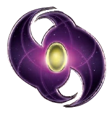

R1 Strategy
Trade > Tech > Leadership
R2+ Strategy
Leadership > Imperial > Trade
Tech Path (Green)
Neural (start) → Hyper Meta → Yin Spinner → Carrier II
Slice
Want: Influence, production planets
Avoid: Isolated, low production
Game Plan
Early (R1): Indoctrination converts 1 enemy infantry to yours after ground combat. Devotion lets you remove infantry to cancel enemy combat hits. Agent gives 2 infantry when you/opponent build 2+ ships. Strong economy with 5 commodities.
Mid (R2-R3): Commander unlocks when another player wins agenda you voted for - once per round, ground force may Sustain Damage. Yin Spinner = 1 free infantry every PRODUCTION. Van Hauge destroyers = hit on 8, Indoctrinate 1 enemy ship.
Late (R4+): Flagship destroys itself + all ships with LESS cost in system. Hero = every ship with a captain can Indoctrinate. Overwhelm through infantry spam and suicide tactics. Salvation through sacrifice.
Key Units
Infantry - Everything
Van Hauge - Steal ships
Flagship - Kamikaze
Exploit
Indoctrination: Steal inf
Devotion: Inf = cancel hits
Yin Spinner: Free inf/prod
Yssaril Tribes
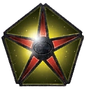

R1 Strategy
Politics > Trade > Tech
R2+ Strategy
Politics > Imperial > Leadership
Tech Path (Green)
Neural (start) → Transparasteel → Grav Drive → Carrier II
Slice
Want: Safe position, influence
Avoid: Adjacent aggression
Game Plan
Early (R1): Stall Tactics = action card to skip turn without passing. Scheming = draw 1 extra action card at start. No action card limit. Agent looks at opponent's hand + steals 1 action card. Politics = 3 action cards. Craft of espionage.
Mid (R2-R3): Commander at 5+ action cards - look at opponent's cards/PNs/secrets when activating their units. Transparasteel = look at secrets when activating. Mageon Implants forces player to do tactical action you choose.
Late (R4+): Hero adds extra action card to hand each action phase. Massive stall advantage - outlast everyone, strike last. Information dominance through card vision. Skip turns until perfect moment, then strike.
Key Units
Carriers - Standard fleet
Fighters - Screen + capacity
Mechs - Stall on ground
Exploit
Stall Tactics: Skip = no pass
Scheming: Extra cards
Mageon: Force opponent act
Emirates of Hacan
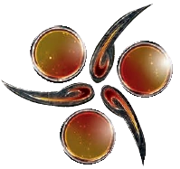

R1 Strategy
Trade > Leadership > Tech
R2+ Strategy
Trade > Imperial > Leadership
Tech Path (Flexible)
Sarween → Grav Drive → Carrier II → Fleet Logistics
Slice
Want: Safe slice, MR access
Avoid: Aggressive neighbors
Game Plan
Early (R1): 6 commodities + Masters of Trade = trade with anyone regardless of neighbors. Guild Ships = 1 TG on each of your carriers. Get Trade card - you're the richest faction in the game. Agent converts TGs into action cards.
Mid (R2-R3): Commander unlocks at 6 TG gained from non-card sources - you AND traded neighbor replenish commodities when you trade. Quantum Datahub Node tech lets you swap strategy cards. Control Trade = control the game.
Late (R4+): Hero gives 3 TG to every player - they become indebted to you. Use wealth for anything: tech, units, political favors. Wealthiest faction wins through economic diplomacy. Money solves all problems.
Key Units
Carriers - Guild Ships TG
Dreads - Combat power
Fighters - Screen fleet
Exploit
Masters: Trade anyone
Guild Ships: 1 TG/carrier
Quantum: Swap strat cards
Crimson Rebellion
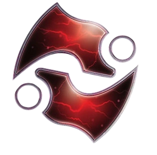

R1 Strategy
Trade > Politics > Leadership
R2+ Strategy
Leadership > Imperial > Trade
Tech Path (Blue/Red)
DET/AI Dev (start) → Sling Relay → Exile II → Carrier II
Slice
Want: MR/Fracture access, wormholes
Avoid: Ultra-low influence
Game Plan
Early (R1): Cannot use normal wormholes! But Incursion creates breach network - active breaches make systems adjacent to EACH OTHER. Sundered = home system destroys any enemy units placed there. Exile destroyers place breaches after combat.
Mid (R2-R3): Commander at breach in enemy system - gain commodity/TG at end of ANY combat. "Post-planet economy" from table-wide combat. Resonance Generator breakthrough = +1 move from breaches + action to create/flip breaches.
Late (R4+): Hero stacks fighters for alpha strike anywhere. Quietus flagship strips ALL enemy unit abilities in breach systems. Deploy mechs to any active breach. Distance is meaningless - breach anywhere, strike everywhere.
Key Units
Exiles - Place breaches
Flagship - Strip abilities
Mechs - Deploy to breach
Exploit
Breach: Instant adjacency
Sundered: Immune home
Commander: TG from fights
Deepwrought Scholarate
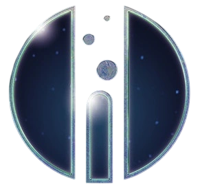

R1 Strategy
Trade > Leadership > Tech
R2+ Strategy
Trade > Leadership > Imperial
Tech Path (Blue/Green)
Research 2 during setup → Hydrothermal Mining → Radical Adv → Unit Upgrades
Slice
Want: Flexible - anything works
Avoid: Isolation from neighbors
Game Plan
Early (R1): RESEARCH 2 TECHS during setup (strongest tech start). Research Team = coexist on planets (share with enemy, both use resources). Oceanbound = gain ocean card when coexisting, provides income. Agent places infantry in coexistence when others tech.
Mid (R2-R3): Commander at 1+ ocean card - gain commodity/TG when anyone techs with -1 discount. Hydrothermal Mining = 1 TG per ocean card each status. Lend Share Knowledge PN for 2+ TG/round. Tech generates massive passive income.
Late (R4+): Visionaria Select breakthrough = others pay 3 TG + PN, you BOTH get the tech. Hero purges a tech from all players. Radical Advancement swaps techs. Coexistence network = diplomatic immunity. Win through technology and economy.
Key Units
Infantry - Coexistence
Mechs - PROD 1 + retreat
Flagship - Chain movement
Exploit
Ocean Cards: Passive income
Coexist: Share planets
Commander: TG from tech
Last Bastion
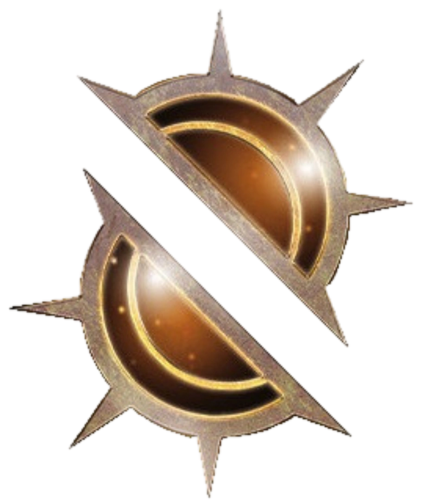

R1 Strategy
Tech > Trade > Leadership
R2+ Strategy
Leadership > Imperial > Construction
Tech Path (Blue)
DET/Sarween (start) → Grav Drive → AI Dev → Helios V2
Slice
Want: Balanced res/inf, low-res planets
Avoid: High-resource only planets
Game Plan
Early (R1): Liberate = invade with infantry ≥ planet resources, planet READIES instantly. Helios VI docks give planets +1 resource. Phoenix Standard galvanizes 1 unit after each combat. Home is nebula (defense bonus). Expand with Liberate economy.
Mid (R2-R3): Commander at 3 galvanized units - action cards immune to Sabotage. Helios V2 = +2 resources per planet. The Icon breakthrough = produce ships in systems with your infantry. Galvanize capital ships for +1 combat die.
Late (R4+): Flagship Egeiro = +1 combat per non-home planet controlled (8+ planets = auto-hit). Hero rolls to destroy enemy units when galvanized unit destroyed. Production dominance through Helios-enhanced planets. Conquer through superior economy.
Key Units
Dreads - Galvanize targets
Infantry - Liberate engine
Flagship - Scales w/ planets
Exploit
Liberate: Ready on conquer
Helios: +1/+2 resources
Galvanize: +1 combat die
Ral Nel Consortium
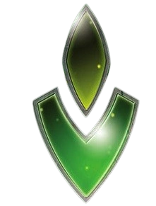

R1 Strategy
Trade > Tech > Construction
R2+ Strategy
Leadership > Trade > Tech
Tech Path (Red/Blue)
AI Dev/Psycho (start) → Nanomachines → Grav Drive → Carrier II
Slice
Want: Defensible, adjacent systems
Avoid: Isolated slices
Game Plan
Early (R1): Miniaturization = transport PDS/docks on ships without capacity. Survival Instinct = relocate 2 ships when opponent activates adjacent. Linkship destroyers trigger PDS remotely. Deploy structures on conquered planets instantly.
Mid (R2-R3): Commander at passing last - retreat up to 2 ships to any system without enemies. Data Skimmer breakthrough collects discarded action cards. Nanomachines = place PDS, repair units, or trade action cards. Mobile PDS network.
Late (R4+): Hero = un-pass, gain 2 CC + 1 action card. Flagship destroys 1 non-Sustain ship on retreat. Alarum mechs reinforce ground combat from adjacent. Your structures fly with your fleet. Untouchable through mobility.
Key Units
Linkships - Remote PDS
PDS - Mobile cannons
Flagship - Retreat + kill
Exploit
Miniaturize: Flying structs
Survival: Reactive move
Data Skimmer: Steal cards